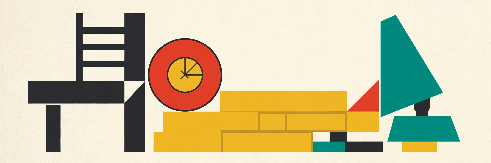
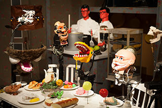
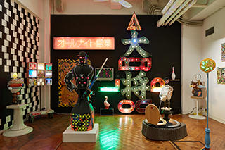
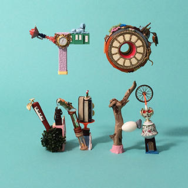
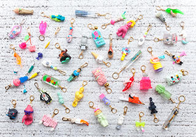
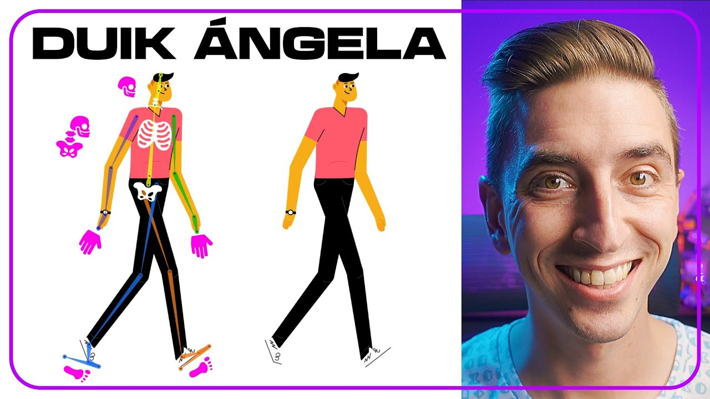
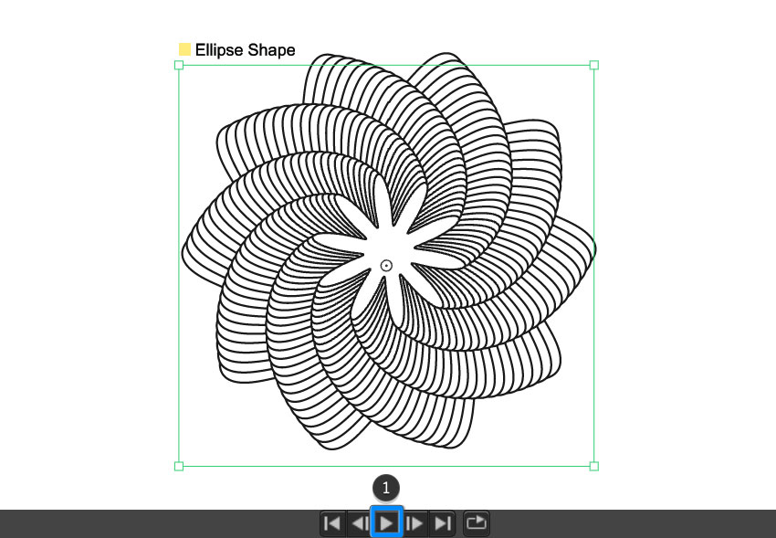

ニュース
今日のハイライト
- トップはWix Studio Two。AIネイティブなWebエディタを、黒と白の「切断」のようなトランジションで見せるモーションが、製品デモを超えた1本に。
- 広告＋モーション系は5本で約7割。Unreal Engine 5で全編作るCG広告、離れたプレイヤーを「利子」で呼び戻すゲーム施策、ベガス式ショー仕立てのスポーツ広告が並ぶ。
- その他は、ワードマークに触らず「V」一文字を足すVisa刷新と、毛糸でイタリア料理を再現する展覧会。今日の通奏低音は「切り替えと、足し算」。
1. 黒と白の切断で見せる、Wix『Studio Two』ローンチフィルム
Wixのインハウス・モーションスタジオによる、AIネイティブなプロ向けWeb制作エディタ「Studio Two」のローンチ映像。Harmony／Symphonyに続くシリーズで、「作り手と技術」「デザインと開発」「構造と自由」という二項を、黒と白の往復と、滑らかではなく鋭く切るようなトランジションで表現する。Reactコードの取り込みやAIによる生成を、従来型の製品デモにせず「技術と創造の関係」として見せる設計が、モーションデザイナーにとっての見どころ。
2. 招かれざるノミが主役、SuperBlimp『Captain Itch』
Elancoのノミ駆除薬Advantageのキャンペーン。製品説明ではなく、家に居座る剛毛のフリー・ローダー「Captain Itch」という1体のキャラクターに全てを賭ける。重いシルエットと猫背で脅威を、大きな目で笑いを作る二面性が核で、クライマックスは「対峙→猫Biscuitの蹴り→後ずさり」の3拍。全編をUnreal Engine 5で制作し、リアルタイム・パイプラインで放送品質の毛並みとライティングを成立させた点が、CG広告の制作フローとして注目できる。20秒放送版からSNSカットダウン、キービジュアルまでを1つのキャラクター資産システムとして出荷している。
3. 離れたプレイヤーの「金」が利子で増えている、Clash Royale『Royale Interest』
SupercellのClash RoyaleとエージェンシーL&Cによる復帰施策。辞めたプレイヤーが置いていったゲーム内ゴールドに、現実の金価格と利子を適用し、最大190万ゴールドまで増やして返すという仕掛けで、「辞めたことが得になる」という逆転を作る。アニメーションスタジオBelieve制作のヒーローフィルムでは、王とゴブリンが地下金庫でその利子を隠していたことが発覚する物語に。ゲーム内の資産そのものを広告のアイデアに変える発想が鮮やか。
4. John Legendがベガス式ショーの司会になる、ESPNカレッジフットボール・プレーオフ
ESPNの「The Wild World of College Football」キャンペーン新作。Arts & Lettersとともに、John Legendが暗いステージのピアノから登場し、背後のスクリーンが割れて大きなセットが現れる30秒スポットを、エンタメ・ショーそのものとして設計した。セット、照明、振付、衣装、音楽を撮影前から統合する作りで、スポーツ映像を「試合の迫力」ではなく「ラスベガスで決勝をやる祝祭感」で売る転換が見どころ。
5. 今週のCMを拾う、Vook「イケてる映像 Vol.253 CM特集」
サイバーエージェントのエディター／モーションデザイナー白戸裕也とVookの連載が、今週はCMに絞ってピックアップ。田中嗣久監督のカロリーメイト「世界から受験が消えたなら」篇、後藤匠平監督のソフラン アロマリッチmoA「香りの詩集」篇（香りのようにふわりとしたルックと編集）など。国内CMの演出・編集の現在地を、作り手の名前とセットで短時間に追える定点観測として有用。
6. ワードマークは触らない。V一文字を足す、Base DesignによるVisa刷新
Base Designが約2年をかけたVisaのグローバル・アイデンティティ刷新。誰もが知るワードマークと青・黄は変えず、追加したのは3つだけ――ワードマークから抜いた単独の「V」シンボル（アプリやモーション向け）、Displaayと作った専用書体Visa Sans（6ウェイト／115言語、12度の傾きを字形に反映）、そして初期ロゴの帯に由来する横長の「プログレスバー」。「変えないために、足す」という引き算ならぬ足し算の設計は、巨大ブランドの更新の教科書になる。
7. 毛糸でイタリア料理のフルコース、Kate Jenkins『Kate's Knitalian』
ブライトンのニット作家Kate Jenkinsによる、編み物のイタリア料理だけで作る没入型展覧会（ロンドンAir Contemporary、12月22日まで）。ラビオリ、スパゲッティ、サラミ、ティラミスから「Pinot Stitchio」と名付けたワインまで全て毛糸で再現し、オープニングはレストランのように予約制の2部制にした。素材の置き換えだけで「美味しそう」が成立するかどうかを試す、クラフトとフード表現の交差点として面白い。
特集 ― デザイン特集マガジン・第10号

欠けたモノほど、くっつけたがる
――magmaの「ドッキング」の設計
捨てられた椅子、役目を終えた電気工具、誰かの作りかけ。普通ならゴミになるモノを拾い集め、接着し、塗り、動かして、見たことのない造形に変える。杉山純と宮澤謙一によるユニットmagma（2008年結成）の仕事は、一言でいえば「コラージュを立体でやる」ことだ。だが本当に学ぶべきは奇抜さではない。「欠けているモノ」を選ぶ目と、バラバラの素材を一つの世界に束ねる編集の方法である。
勉強ポイント
- 「欠け」が素材の条件になる：完成したモノには手を入れる余地がない。足りないモノほど、次の造形の入り口になる。素材選びの基準を「完璧さ」ではなく「介入できる余白」に置く発想
- テーマだけ決めて、別々に作る：二人は大枠を共有したら各自が自由に作り、最後に一つの空間・一つの世界に束ねる。統一感は指示ではなく、同じ場所で互いの制作を見続けることで生まれる
- 置き換えで既成概念を外す：時計の針を抜いて絵を入れれば「時計」の定義が揺らぐ。組み合わせだけでなく「一部を差し替える」ことで、見慣れたモノの意味をずらす技法
1. 原点は、捨てられた「変な椅子」
magmaの二人は武蔵野美術大学・空間演出デザイン学科で出会った。廃材を使う作風の原点は学生時代にあると宮澤は語る。学内には木工作品を作る学科があり、展示が終わると学生の椅子などが構内に捨てられていた。宮澤はその中から「変な椅子」を拾って改造するのが好きだったという。「いい椅子ではない。本人もよくないと思っているから捨てる。でも、その足りない感じに創作意欲を掻き立てられる」。自分ではできない技術や、良い素材が使われていることも魅力だったという。
杉山の側の原動力は「古いモノ」への興味だ。昔に作られた木のプロダクトに惹かれ、その木をプラスチックに置き換えれば新しくなる――古い素材と現代の素材を合わせる「変化」自体を楽しむ感覚である。宮澤の「欠けへの欲求」と杉山の「置き換えの快感」。この二つの衝動が、magmaの造形のエンジンになっている。
卒業制作《FUTURE SHOCK》はその結晶だ。部屋の中で人間とロボットが食卓を囲み、廃材で作ったフェイクの食べ物や家具が並ぶ。「人間がロボット化していく未来」の一場面を、音を立てて動くロボットとともに立体で描いた。この作品は結成10周年（2017年）のラフォーレミュージアム原宿での個展で復元され、10年越しに再び展示された。学生の実験が、ユニットの「原風景」として通用し続けたわけだ。

クレジット：ROPPONGI MIRAI KAIGI（https://6mirai.tokyo-midtown.com/en/interview/113/）
写真では、雑多な素材の寄せ集めであるはずの食卓が、一つの「未来の日常」として成立している。素材の出自はバラバラでも、色とスケールと「食卓を囲む」という状況設定が全体を束ねている。コラージュの接着剤は、糊ではなく文脈なのだ。
2. 《SYMVOL》― 記号を拾い直す
2016年、中目黒VOILLDで開かれた個展《SYMVOL》のテーマは「シンボル」だった。記号は放っておけば意味が変質し、やがて「印」の役目を果たさなくなって静かに忘れられる。人間が人間らしく生きるために記号を作り続けてきた営みに着目し、消えかけた古いシンボルに新しい形を与えて命を吹き込む、という展示である。モチーフに選ばれたのはマリリン・モンロー、ミシュランマン、工事現場のサインなど、誰もが見覚えのある記号たちだった。
制作方法もこの展示を象徴している。テーマを決めたら、あとは二人それぞれが自由に作る。別々に作ったモノを一つの空間に置くことで、最終的に一つの作品になる。杉山は直線的で構築的、宮澤は偶発的で自然発生的な作風と、本人たちが「対照的」と認めるほど手つきが違う。それでもバラバラにならないのは、同じアトリエで互いの制作をリアルタイムに見ながら「あいつがあれをやるなら、俺はこれ」という即興の応答を重ねているからだという。統一は設計図ではなく、距離の近さが生んでいる。

クレジット：ROPPONGI MIRAI KAIGI（https://6mirai.tokyo-midtown.com/en/interview/113/）
3. クライアントワークでも「別々に作って束ねる」
この方法は、ゆずのアルバム『TOWA』（13thアルバム）のジャケットでも同じだった。方向性とサイズ感だけを決め、あとは別々に制作し、一つの世界観に仕上げている。ゆずとは2015年のシングル「終わらない歌」でも組み、マリオネット時計をテーマにしたアナログなロボット20体がMVの中で生命のように動いて話題になった。時計というモチーフ自体、「針と数字があれば時計になる」という気づきから来ている。目覚まし時計から長針・短針を抜いて秒針だけを残し、絵を入れる。置き換えによって「これは時計でもありうる」と見る側の思い込みを書き換える瞬間を、宮澤は「一番気持ちいい」と語る。
近年の到達点が、2024年8〜9月に渋谷PARCO・PARCO MUSEUM TOKYOで開かれた約7年ぶりの大規模個展《TRICK HEARTS》だ。だまし絵やシュルレアリスムといった古典的な「目を欺く」表現を、アイロニカルなアナログ感とクレイジーな色彩というmagmaのフィルターで再解釈する試みで、広告美術は安田昂弘（CEKAI）が手がけた。Nike、New Balance、Uniqlo、Brain Dead、サカナクション、PUNPEEらとの仕事が示すように、廃材コラージュという一見コントロールしにくい手法は、ブランドやミュージシャンの世界観を作る「編集可能な言語」にまで育っている。

クレジット：ROPPONGI MIRAI KAIGI（https://6mirai.tokyo-midtown.com/en/interview/113/）

クレジット：ROPPONGI MIRAI KAIGI（https://6mirai.tokyo-midtown.com/en/interview/113/）
キーホルダーのような小さなプロダクトにも同じ思想がある。機能はほぼないのに、人は気軽に手に取り、身につけ、時に電車で見知らぬ人との会話のきっかけにまでなる。大きな家具には「使えること」が求められる一方、小さなモノは「見せる趣味」として機能する。サイズごとにモノの役割が違うことを見極めて作り分ける感覚も、magmaの設計の一部だ。
欠けたモノを拾う。テーマだけ決めて別々に作る。一部を置き換えて意味をずらす。magmaの奇抜さは、実はこの三つの地道な判断の積み重ねでできている。
出典
- Creator Interview No.113 magma｜ROPPONGI MIRAI KAIGI https://6mirai.tokyo-midtown.com/en/interview/113/
- magma exhibition "TRICK HEARTS"｜PARCO MUSEUM TOKYO https://en.art.parco.jp/museumtokyo/detail/?id=1521
- The identity of magma, the outlandish artist unit behind the FUJIYAMAX store｜HOUYHNHNM https://www.houyhnhnm.jp/en/feature/125998/
- [Interview] Artist unit magma｜ISETAN MEN'S net https://www.imn.jp/en/post/108057203805
AE／Cavalry チュートリアル・表現コーナー
骨を入れて歩かせる
AEはDuikのリグ、Cavalryは複製と変形で作るジェネラティブ表現
イラストの人物を、骨を入れて歩かせる ― DUIK Angela Jumpstart Complete Beginner's Guide／Jake In Motion

無料プラグインDuik Ángelaの入門決定版（約56分）。リグ向けの絵の作り方から、Bonesで骨格を作り、Auto-Rigで自動リグし、コントローラーだけが残るようコンポを整理するところまでを一気通貫で見せる。最後は自動のWalk／Run Cycleで歩行を作り、走りへの切り替えや膝のポップ修正まで扱う。
表現ポイント：核は「絵を動かす」のではなく「骨＋IKのコントローラーをアニメーションする」設計に切り替えること。CMや解説動画で人物イラストを歩かせたり手を振らせたりする場面で、毎回パーツごとにキーを打たずに済み、ポーズの差し替えにも強い。
円1つから、花のような回転パターンを作る ― Cavalry app 101: A quickstart guide for new motion designers

後半の作例が本題。楕円1つ（Divisions 10、白フィル＋黒ストローク）にRadiusへのStagger（100→350）をつなぎ、Duplicator（Point分布・Count 30）で複製、さらにOscillator Deformer（Use Normals、-50〜50、Stagger 5）でうねらせると、線が重なった花状パターンが回転し続ける。
表現ポイント：核は「形は1つ、違いはStaggerとOscillatorで後付けする」こと。個数や半径範囲を変えるだけで別柄になるため、背景テクスチャやローディング、タイトル周りの装飾モーションの量産に向く。
今日試すなら：まずCavalryから。円1つで10分もかからず結果が出て、Staggerの効き方が体で分かる。Duikは週末に腰を据えて。